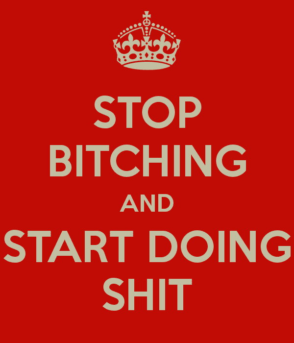
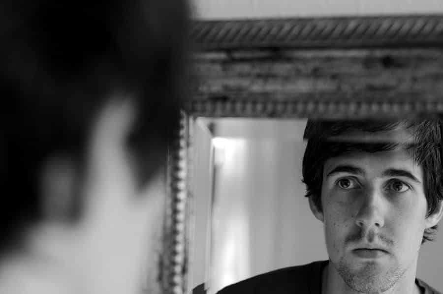

Responsibility. It’s a big word. All too many people today don’t take on full responsibility for their lives, and thus, they remain juvenile and immature, while doing a whole lot of complaining that gets them nowhere.
In general, when I look around today, I see a lot of people blaming a whole lot of other people and circumstances for the predicament that they find themselves in, especially on social media. It’s just another branch of attention whoring and it’s weak and apathetic. And it reflects a complete lack of personal leadership of one’s self, a.k.a. responsibility and accountability.
The blame game is one of the most prevalent escape attempts that people the world over implement to try to avoid personal responsibility. It’s like knowing you have to lose weight, but it was rainy today, so dammit, you didn’t go out for cardio and instead opted to sit around watching TV all day while eating potato chips. It’s not your fault, nay! The fault always lies somewhere else.
Yet, if you’re up past your neck in debt for buying into the Western dream of having that big house, that fancy car, those three foreign vacations every year, or any inane amount of vanities “provided” by the “good life”, you are responsible for making those choices. If you’ve reached the stage of your relationship turned relationshit, you have to own up to the fact that you were the other half of that equation. Therefore, you have the tools, at least in part, to dig yourself out of that hole and repair what needs to be fixed. By so doing, you reassert control and take full responsibility on your own behalf.
You are the blacksmith of your own life. You forge your own destiny. This includes absolutely every area of your life. You are always, at least in part, responsible for how things turns out. Scapegoats simply don’t exist. Do we even stop to ponder whether our excuses would ever hold up in an earthly court of law?
It’s like the old saying “There are no such things as excuses, only reasons why things don’t get done.” That’s all part of owning your own shit. That’s called being accountable and being in control, at the end of the day.
The Power Of Choice
Wherever you are in life, you must realize that if you are not happy with the way things are, your choices have brought you to this point. From the unhappy feminist who can’t land a decent man for the life of her, to the lonely white knight who can’t land a girl who’d be attracted to him, to the jailbird sitting behind bars doing time for getting caught, to the pick-up artist who doesn’t feel anything anymore, regardless of the hot chicks that he bangs, to the modern individual swimming in a sea of stress and worry to maintain a certain lifestyle, you have got to realize… your beliefs and actions dictated the roads you took that landed you where you now are. You have the option of making better choices, moving from dissatisfaction to satisfaction.
By taking on full, personal responsibility, you move into a place of power. All the complaints and gripes end when you take control of your life. Sure, you might feel frustration in your personal struggles, and surely you will, but that doesn’t automatically warrant a complaint. That said, any time you, or anyone for that matter, issues a complaint, you damn well better also have some plausible solutions available, so that you don’t ascribe yourself to being a basic bitch. With the complaints department closed, you can focus on the things that truly weigh and matter, and thus, orienteer yourself in getting your shit together.

A lot of people today look to evade hardship and aim to procure the “easy life” for themselves, thereby shedding the weighty garb of full, personal responsibility, and accountability. In so doing, they become weak in their hedonistic quest, like someone who doesn’t want to push the heavy weights, lest they become musclebound. Don’t fall for the bullshit and mirage. Be the one to bitch-slap yourself so someone else doesn’t have to do it for you.
For the most part, life is mundane. It’s a grind, from day to day, trying to pay the bills, trying to make headway for a better tomorrow. The mountain high experiences we have are just a brief respite, to give us a sense of escape and elation, before the roller coaster rushes back down to the valleys below for more struggle and toil, which, granted, is what the bulk sum of life adds up to. You don’t want the hard times, but you need them. You need them to learn and grow, so that you don’t become or remain a milksop.
See it as your payoff for the moment when you experience mountain highs. Don’t expect life to offer you a continuous string of steady goodness, because should such an unfortunate thing happen, you would quickly tire and get bored, and the said high would become the next tier in the mundane existence you otherwise lead.
Therefore, mountain highs must be rationed. You have to earn that bone, little doggie! You need those drivers of necessity in your life. Otherwise, you’d have no ambition. You would feel no need, and have no driver that compelled you to push forward. You’d simply drift, much like all too many kids of rich folk, who end up druggies and complete wastes of life, having been handed it all. Trust me, I’ve seen it. The easy life is no blessing.
Everyone gets tested in this life. It’s a necessary good and evil, all rolled into one. You can’t stop the winds from blowing, nor the rain from falling. The tests are there on a consistent basis to make you stronger. But of course, it’s out of your free volition what you choose to do in the face of these tests. Either relent or push through. That’s the beauty of it. This is the stage where you get to own your own shit, where you get to step up to the plate and make yourself more of a man. This is where the word perseverance comes in.
The Power of Perseverance
The number one thing, fellas, that I would adhere to when life tests you, is to stay the course. Persevere. Especially as a man, for the sake of your internal stock, stand. Get your armor on, cast-iron faceplate included, and weather the storm. Stand like the fucking Rock of Gibraltar. Stand where others fall, where others simply have given up. Choose to be more than the status quo, so that in the end, your life will have meant something and you’ll be able to respect yourself.
This is, in short, is where especially men, the world over, have failed. Simply, they’ve failed to stand and persevere. Or perhaps their personal houses were built on such shoddy foundations, that when the storms of life contested them, their abodes were consequently laid to waste. Regardless, relenting in the face of pressure and abandoning their post has been to the detriment and downfall of men the world over. All too many people today crumble in the face of criticism and pressure, changing their views and stances to appease the dominant mindset. In so doing, they lower themselves to betas and find themselves courted by the pastures of victimhood.
Bruce Lee had it right, when he advised “Do not pray for an easy life, pray for the strength to endure a difficult one.”
Instead of standing and persevering, we have chosen to drift and sway, to avoid the weight of hardship and the heat of trial. We have chosen to be agreeable, even when we don’t agree, just to avoid conflict. Somehow, we think that if we relent and just go with the flow, we’ll have it easier in life. Bullshit. That’s the exact point at which your life and inner workings become a living hell and you end up feeling defeated, less than a man.
As a man, it’s your duty above all to yourself, that you navigate and captain your personal ship with trustable authority. Without personal accountability and full responsibility, this is purely impossible. Without standing and persevering in the face of trial, this will never happen. You have to be able to respect the man looking back at you in the mirror.

Know and recognize what it is that you stand for. You must guard and honor your post. You must stand. Son, you are at the helm. You wear the captain’s hat. Don’t throw it away, no matter how hard the ride is.
No matter the criticism, no matter the pressure, no matter how turbulent the sea, just stand. The winds are going to blow anyway and you can’t stop the storms from coming. So stand like your life depends on it. Because if you’re honest with yourself, it does.
In closing, when pondering the tenet of personal responsibility and asking yourself what you stand for, take it from the central punchline in Sly Stallone’s 2008 rendition of Rambo: “Die for nothing, or live for something.”
Succumb and become a beta, or stand steadfast like an alpha.
Read more: How To Stand Up To Abusive U.S. Customs Officials And Win